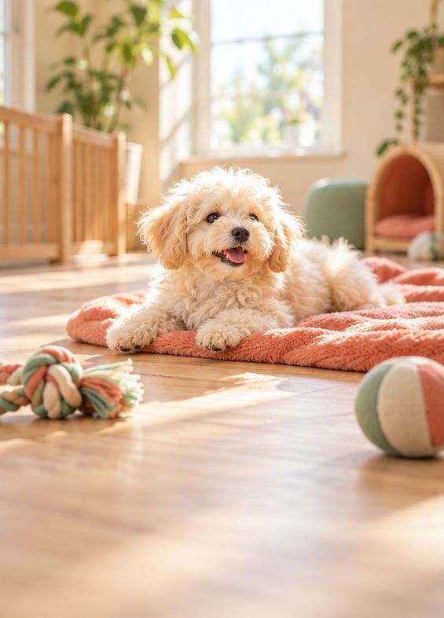

01
はじめましての
あいさつが上手に
犬どうしの距離のとり方を遊びの中で覚えて、散歩で会う犬とも仲よくなれるように。おともだちが増えた、という声も。

ペットホテル・犬の保育園 ／ 千葉県市川市東国分
あずけた日、うちの子は
ちょっと成長して帰ってくる。
はじめて預ける日は、誰でも気になるところ。
口コミには「保育園の日は朝からうれしそう」「様子を写真と一緒に教えてくれる」という声が並びます。下へスクロールすると、ある一日をのぞけます。
※過ごし方とお知らせの文面は、口コミをもとにしたイメージです。実際の一日の流れに差し替えます。
口コミに書かれていた変化を、3つにまとめました
01
犬どうしの距離のとり方を遊びの中で覚えて、散歩で会う犬とも仲よくなれるように。おともだちが増えた、という声も。
02
保育園で毎日くり返すうちに、家でのトイレも安定してきた、という口コミがありました。
03
苦手なことは少しずつトレーニング、いいところはさらに伸ばす。家で、知らなかった一面を見せてくれるように。
※Googleの口コミの要旨をもとにしています。すべての子に同じ変化があるとは限りません。
口コミに何度も出てくるのが、おともだちと遊ぶ時間のこと
お泊まりのあいだも、昼は保育園のおともだちと一緒に過ごします。ふだん保育園に通っている子なら、慣れた場所と顔ぶれなので、おとまりも楽しそう、という口コミがありました。
口コミに出てくるサービスを載せています。他のサービスと料金は、実際の内容に差し替えます
日中にお預かりして、
おともだちと遊びながら
社会性を育てます。
子犬向けのパピークラスも。
お泊まりの日も、
昼間はみんなと一緒に。
苦手なことは少しずつ。
いいところは、ほめて伸ばす。
犬も猫も。
ほかのサービスと一緒にどうぞ。
こわがりな子にも、
明るく、ていねいに。
お出かけ中に、おうちでお世話。
毎回、写真と様子を報告します。
最初はカウンセリングから。
性格や苦手を聞いてからお預かり。
実際の内容に差し替えます
Instagramに載せている保育園の様子などに差し替えます
横にスクロールできます
寂しくないように、くらいの気持ちで通わせたら、散歩で会う犬へのあいさつまで上手になって驚いた。
こわがりな猫でも安心して任せられる。シッターの日は毎回、写真と様子を送ってくれるのがうれしい。
着いたとたん、自分から部屋へ走っていく。ホテルでも昼はみんなと遊べるのが気に入っている。
最初のカウンセリングから、とてもやさしく親切。Instagramで保育園の様子が見られるのもおすすめ。
※Googleの口コミの要旨をもとにしたイメージです（原文ではありません）。
営業日・時間はGoogleマップの情報（2026年10月）
お休みの日・受付の締め切り時間は 実際の内容に差し替えます
〒272-0833
千葉県市川市東国分1丁目30-14
最初はカウンセリングで、性格や苦手なこと、ふだんの様子を聞くところから始まります。予約の方法と、当日の持ち物を書きます。
LINEで様子を教えてもらえた、シッターの日は毎回写真と報告が届いた、という口コミがあります。保育園の日々の様子はInstagramでも見られます。
猫の爪切り・シャンプー、留守中のシッターを利用している、という口コミがあります。猫のおとまりの可否を、実際の内容に合わせて書きます。
保育園・ホテル・シャンプー・シッターなどの料金を、実際の金額に差し替えます。
必要な書類や条件を、お店のルールに合わせて書きます。
ご予約やご相談は、DMからどうぞ。